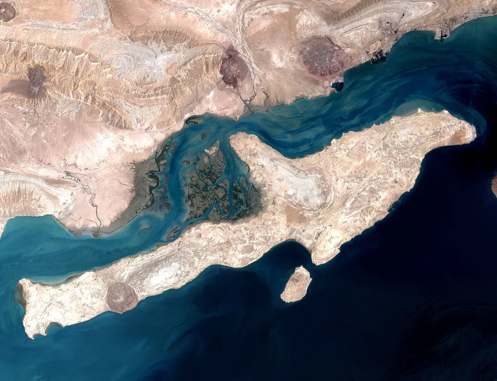

The Great Lakes: North America’s Inland Seas
Five freshwater lakes, a glacial past, and a watershed that shapes an entire region.
From freshwater shores to branching deltas: explore the landscapes that connect water, climate, and life.

Five freshwater lakes, a glacial past, and a watershed that shapes an entire region.

Surface winds, density differences, and Earth’s rotation keep seawater in motion.

Sediment, changing channels, and coastal energy create some of Earth’s richest landforms.
No stories match your selection. Try another topic or search.